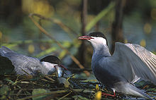
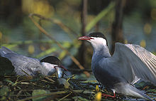

| Whiskered Tern | |
|---|---|
|  | |
| Conservation status | |
| Binomial name | |
| Chlidonias hybridus (Pallas, 1811) |
|
| Subspecies | |
|
| Whiskered Tern | |
|---|---|
|  | |
| Conservation status | |
| Binomial name | |
| Chlidonias hybridus (Pallas, 1811) |
|
| Subspecies | |
|
The Whiskered Tern (Chlidonias hybridus) is a seabird of the tern family Sternidae. This bird has a number of geographical races, differing mainly in size and minor plumage details.
C. h. hybridus breeds in warmer parts of Europe and Asia. The smaller-billed and darker C. h. delalandii is found in east and south Africa, and the paler C. h. javanicus from Java to Australia.
The tropical forms are resident, but European and Asian birds winter south to Africa and southern Asia.
This species breeds in colonies on inland marshes, sometimes amongst Black-headed Gulls, which provide some protection. The scientific name arises from the fact that this, the largest marsh tern, show similarities in appearance to both the white Sterna terns and to Black Tern.

.jpg){kind=link}